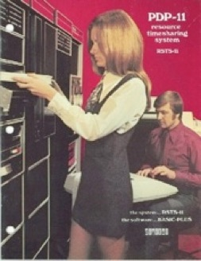
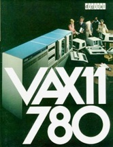
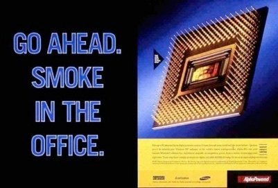
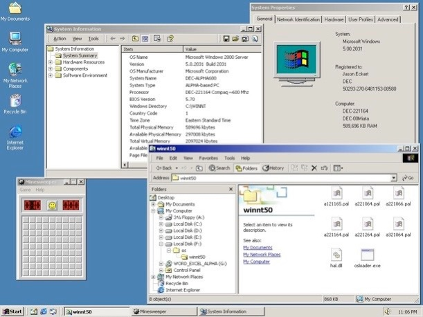
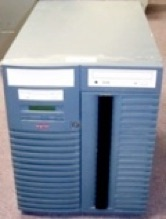
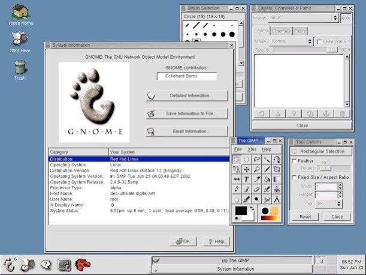

Overview of DEC
Monday, January 24, 2011
I think it fitting to mention DEC here because, although they were never a household term, they were one of the best computer companies of all time - we wouldn’t have the Internet, UNIX, or TCP/IP without them!
Digital Equipment Corporation (DEC) was born in the late 1950s when it was lucrative to make computers that cost a ton of money. And DEC was good - they would make computers that would perform much better and cost significantly less than the IBM equivalent (IBM mainframes back then were expensive behemoths).

The DEC PDP (Programmed Data Processor) line of minicomputers were so good and inexpensive, you’d be hard pressed to NOT find one in your local university.
The PDP-7 was the first computer to run the infamous UNIX operating system.
The PDP-10 was the first computer to introduce time sharing and TCP/IP implementation for the Internet (there were plenty of PDP-10 nodes on the early Internet, or ARPANET).
The PDP-11 was the most influential and mass-produced minicomputer of its time that led to the creation of the C programming language as well as the designs of CP/M, DOS, and the Motorola 68000 architecture.
Although PDPs were still sold in the 1980s (and early 1990s), they were largely considered obsolete by then.

What took their place was the 32-bit DEC VAX (Virtual Address Extension) computer (which was a 32-bit extension of the PDP-11). VAXen were extremely popular everywhere in the 1980s, but died off in the 1990s. For an operating system, they ran UNIX or VMS, but almost everyone I knew ran UNIX on them because it was faster and more flexible than VMS (although VMS did have some cool features such as network clustering and advanced file versioning).DEC knew in the 1980s that VAX’s days were numbered since 32-bit platforms were quickly becoming commonplace.
They knew that they needed a radically new product if they wanted to stay viable into the 1990s, so they spent over a billion dollars in research and development and came up with an architecture that was unbelievably powerful yet backwards-compatible to VAX/PDP - that was the DEC Alpha AXP (or just “DEC Alpha”), a 64-bit RISC CPU that ran at clock speeds 10 times that of other CPUs during the time. Although these computers were expensive, you got what you paid for - they were superb number crunchers, and the fastest computers in the world.

The DEC Alpha was DEC’s ultimate product - their glory. It could run VMS, UNIX (several flavors), Linux (the DEC Alpha was the first non-i386 architecture to run Linux), and even Windows. Yes, you heard me correctly - it could run Windows - DEC added a special BIOS to the Alpha that allowed it to install and boot Windows NT4 or Windows 2000 (Beta). Here is a screenshot of one of my DEC Personal Workstations running Windows 2000:

Although Windows ran extremely fast on the Alpha (they even had Microsoft Office ported to Alpha too), Windows was a 32-bit operating system only - running it on a 64-bit Alpha was like putting a 4-cylinder engine inside a Cadillac Escalade. It is important to note that the Alpha hardware booted Windows using a special FAT partition that contained the osloader.exe boot loader program and hardware architecture details (HAL & PALs) as shown in the screenshot above.
Everyone in their right mind only ran UNIX or Linux on the DEC Alpha....

One of the coolest workstations that DEC came out with was called the Digital Ultimate Workstation (a.k.a. AlphaServer 1200) - it came out in 1997 and had two 533MHz 64-bit Alpha CPUs with 4MB of cache, 4GB of RAM, and 7 Ultrawide SCSI hard disks (hot-swappable) for a mere $80,000. I actually had 4 of these given to me by Compaq for use in research - the same machines were previously loaned out to a company called Digital Domain to create the graphics for the movie “Titantic”, and yes, they used Linux on them to do the work! I still have one of them (I use it to demonstrate RAID at the campus) - it is still kicking strong after 13 years (DEC hardware was always well-made).Of course, when I used them back in the day, I had Linux on them - and they ran Linux so blazingly fast that others couldn’t believe it. Remember that in the late 1990s and early 2000s, Linux was still “feeling” its way into the world - many companies didn’t treat it seriously back then - but when you saw it run on a DEC Alpha, you couldn’t do anything but stare in awe. Below is a screenshot of Red Hat Linux running on one of my Digital Ultimate Workstations - the GIMP (powerful image manipulation software) is running in the foreground. While a typical system today takes about 2 minutes to do a complex light effect render using the GIMP today, the Digital Ultimate Workstation running Linux takes about 10 seconds (remember that the Alpha is a blazingly fast number cruncher):

So, this is why the DEC Alpha is often used in reference to well-designed or fast computers. However, by the 1990s, DEC was in a downwards spiral of mismanagement and had trouble capitalizing on the Alpha (they didn’t have the know-how to market it properly), so they went bust in 1998 and were sold to Compaq, who continued Alpha development. Compaq did manage to market and sell Alphas very successfully (they sold more Alphas in 3 years than DEC did in 6 years).
However, when HP bought Compaq in 2002, HP immediately slated the Alpha architecture for retirement because they wanted to push the Itanium architecture (which they realized was a very poor decision in the end). By 2007, Alpha support had ceased everywhere, and HP was stuck with crappy high-end Itanium systems that sold poorly at best. If they would have stuck with the Alpha platform, they probably would have capitalized on a much larger portion of the high-end computing market like Compaq did.
Of course, if DEC did not decline in the 1990s, we’d probably still see the Alpha platform today as well. The decline of DEC is fascinating in its own right - but I’ll save that for another blog post.